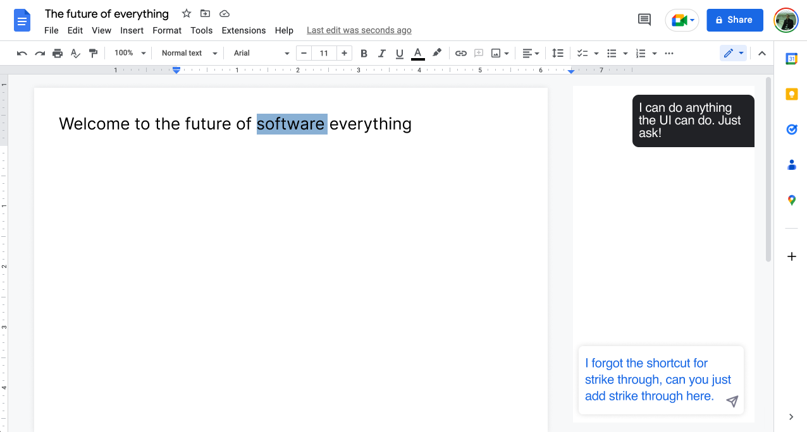

ChatGPT And The Emerging Conversational Graphical User Interface

Everyday software that we use like Google Docs, Photoshop, Jira, and most mobile apps are about to become much more powerful and much simpler.
Beyond just creating documents and teaching us new things, generative AI will transform how we interact with nearly all software, websites and apps that we use. ChatGPT style AI will allow us all to do the one thing we've been wanting for as long as we can remember—it will allow us to just talk to our tech in plain english and get the outcome we expect.
Of course, fully switching away from the graphical user interface to a chat interface would probably make most software harder to use in many cases. We still want to browse, tap, and manipulate content with our hands. That's why it's time for a new interface paradigm that leverages both GUI and chat together.
ChatGPT is amazing at turning ordinary English into precise commands that any computer can understand.
We know that ChatGPT is great at writing code and that Github has built GPT into GitHub with Copilot which is helping many developers get more done. In fact, some of the most advanced training that ChatGPT has had is in writing code, but this same technology can be used to do a lot more than just write code.
The user interface that you see on your screen, with cursor blinking and various panels open, can also be expressed in a code model that describes every aspect of the current UI state. Also, all software can be built to be operated by terminal style commands.
This means that GPT can understand two essential things: (1) exactly where you are in the app and (2) how to translate any regular English request into a command that will perform literally any task that the regular UI can perform.
What is coming will probably bring the greatest transformation since the introduction of the graphical user interface to human computer interaction.
As we speak, nearly all of the applications we use have fallen behind their potential. This was true the day ChatGPT (and GPT 3+ APIs) became available.
Introducing the Conversational Graphical User Interface (CGUI)
Until now there were two ways to interact with a computer: use a terminal and enter commands, or use a Graphical User Interface to point and click. For the first time in decades, there is now a new way to interact with your computer: the Conversational Graphical User Interface.
Google Docs + Chat Interface
Soon you will likely be able to do pretty much anything just by asking in Google docs. This means being able to finally ask to end the bullets, add styling like strikethrough when you may have forgotten the command and a host of other helpful things.
Photoshop + Chat Interface
Photoshop is an example of a more complex chat application. It can be hard to remember how to use all of the functionality when you are not a frequent user. A chat interface can allow any user to start to leverage the full power of this image editing software. You can expect the complexity of software the ordinary user is able to use with ease will go way up.
Jira (issue tracking) + Chat Interface
The addition of a chat interface will make project management software much easier and faster to use. My team often writes our tickets in a spreadsheet or doc, includes estimates and refine the work breakdown before we go through the process of creating Jira tickets. ChatGPT is already able to read those docs and create structured data. In the future, issue tracking software will combine a chat interface to make creating tickets much faster. Also, the Jira Query Language (JQL) could easily be replaced by a search bar with simple english instructions in most cases.
If Atlassian (the maker of Jira) doesn't incorporate a chat interface quickly, there is room for a competitor to finally take their place. The switching cost away from Jira will be way way less when the competing solution has a chat interface.
Search bars everywhere will turn into Chat Bots
Search bars are going to do a lot more than just provide keyword results. They will start to actually perform actions and then tell you how. Getting a list of directions from a keyword search on how to point and click to change your display settings. I'm looking forward to saying goodbye to screens like this and instead just saying "please swap my right and left monitors" in a MacOS search bar.
In addition to the ChatBot getting integrated into the GUI, we are already integrating the GUI elements into chat. This will get much more fluid as time goes on.
This builds on the idea that search bars will begin to execute actions. Many search results require follow up actions. For example, think of a banking app, where someone types "pay my credit card from my checking account" into the search bar. The user may have multiple credit cards, will still need to determine the amount to pay, etc. In this case, the chat can respond with GUI elements that allow the user to quickly finish the action.
This new interface paradigm has the potential to completely disrupt the technology industry.
- Companies will have to rethink the UI for their apps from the ground up.
- The learning curve for new software will be greatly reduced allowing new products to disrupt traditional software.
- More complex software will be accessible to the masses (think professional video editing, 3d image creation).
- Features that would be very helpful, but would have been previously too hard to use for the target user base, will now start to be implemented and used.
- Companies that don't add support for conversational input in their software will be put out of business.
How can you start preparing for this transition?
If you are an early stage company, especially one going up against an entrenched player with a subpar product, this is a great opportunity for you. You can get ahead of the curve and make a product that is incredibly simple to learn, and offers a snappier interface than your competitor.
For everyone else I would recommend the following:
- Prepare any future product design to incorporate a chat interface that controls the UI.
- Make sure your software can respond to command line input.
- Don't be afraid to lead rather than follow, the worst thing you can do is get behind.
Finally, this transformation will happen fast and probably feel pretty obvious within 18–24 months.
I expect that everything described here will become standard very quickly and we will begin to take for granted that whenever we are stuck in an app, we can just ask and get exactly what we want. The question that remains is what totally new capabilities will be unlocked and what new markets will be reachable with this next level UI.
Below are the slides that I presented on this topic at the NYC Product Engineering Group.